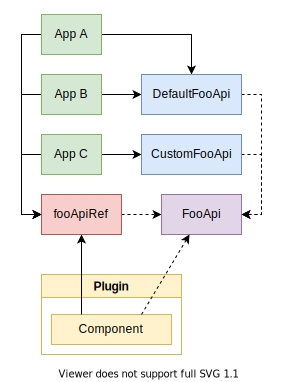

Introduction
Backstage Plugins strive to be self-contained, with as much functionality as possible residing within the plugin itself and its backend APIs. There will however always be a need for plugins to communicate outside of its boundaries, both with other plugins and the app itself.
Backstage provides two primary methods for plugins to communicate across their
boundaries in client-side code. The first one being the
createPlugin API along with the
extensions that it can provide, and the second one being Utility APIs. While the
createPlugin API is focused on
the initialization plugins and the app, the Utility APIs provide ways for
plugins to communicate during their entire life cycle.
Consuming APIs
Each Utility API is tied to an ApiRef
instance, which is a global singleton object without any additional state or
functionality, its only purpose is to reference Utility APIs.
ApiRefs are created using
createApiRef, which is exported
by @backstage/core-plugin-api. There are also
many predefined Utility APIs in
@backstage/core-plugin-api, and they're all
exported with a name of the pattern *ApiRef, for example
errorApiRef.
To access one of the Utility APIs inside a React component, use the
useApi hook exported by
@backstage/core-plugin-api, or the
withApis HOC if you prefer class
components. For example, the
ErrorApi can be accessed like this:
import React from 'react';
import { useApi, errorApiRef } from '@backstage/core-plugin-api';
export const MyComponent = () => {
const errorApi = useApi(errorApiRef);
// Signal to the app that something went wrong, and display the error to the user.
const handleError = error => {
errorApi.post(error);
};
// the rest of the component ...
};
Note that there is no explicit type given for
ErrorApi. This is because the
errorApiRef has the type
embedded, and useApi is able to infer
the type.
Also note that consuming Utility APIs is not limited to plugins, it can be done
from any component inside Backstage, including the ones in
@backstage/core-plugin-api. The only
requirement is that they are beneath the AppProvider in the react tree.
Supplying APIs
API Factories
APIs are registered in the form of
ApiFactory instances, which encapsulate
the process of instantiating an API. It is a collection of three things: the
ApiRef of the API to instantiate, a
list of all required dependencies, and a factory function that returns a new API
instance.
For example, this is the default
ApiFactory for the
ErrorApi:
createApiFactory({
api: errorApiRef,
deps: { alertApi: alertApiRef },
factory: ({ alertApi }) => {
const errorApi = new ErrorAlerter(alertApi, new ErrorApiForwarder());
UnhandledErrorForwarder.forward(errorApi, { hidden: false });
return errorApi;
},
});
In this example the errorApiRef
is our API, which encapsulates the
ErrorApi type. The
alertApiRef is our single
dependency, which we give the name alertApi, and is then passed on to the
factory function, which returns an implementation of the
ErrorApi.
The createApiFactory
function is a thin wrapper that enables TypeScript type inference. You may
notice that there are no type annotations in the above example, and that is
because we're able to infer all types from the
ApiRefs. TypeScript will make sure
that the return value of the factory function matches the type embedded in
api's ApiRef, in this case the
ErrorApi. It will also match the
types between the deps and the parameters of the factory function, again
using the type embedded within the
ApiRefs.
Registering API Factories
The responsibility for adding Utility APIs to a Backstage app lies in three different locations: the Backstage core library, each plugin included in the app, and the app itself.
Core APIs
Starting with the Backstage core library, it provides implementations for all of
the core APIs. The core APIs are the ones exported by
@backstage/core-plugin-api, such as the
errorApiRef and
configApiRef.
The core APIs are loaded for any app created with
createApp from
@backstage/core-plugin-api, which means that
there is no step that needs to be taken to include these APIs in an app.
Plugin APIs
In addition to the core APIs, plugins can define and export their own APIs.
While doing so they should usually also provide default implementations of their
own APIs, for example, the catalog plugin exports catalogApiRef, and also
supplies a default ApiFactory of
that API using the CatalogClient. There is one restriction to plugin-provided
API Factories: plugins may not supply factories for core APIs, trying to do so
will cause the app to refuse to start.
Plugins supply their APIs through the apis option of
createPlugin, for example:
export const techdocsPlugin = createPlugin({
id: 'techdocs',
apis: [
createApiFactory({
api: techdocsStorageApiRef,
deps: { configApi: configApiRef },
factory({ configApi }) {
return new TechDocsStorageApi({
apiOrigin: configApi.getString('techdocs.storageUrl'),
});
},
}),
],
});
App APIs
Lastly, the app itself is the final point where APIs can be added, and what has
the final say in what APIs will be loaded at runtime. The app may override the
factories for any of the core or plugin APIs, with the exception of the config,
app theme, and identity APIs. These are static APIs that are tied into the
createApp implementation, and
therefore not possible to override.
Overriding APIs is useful for apps that want to switch out behavior to tailor it to their environment. In some cases plugins may also export multiple implementations of the same API, where they each have their own different requirements on for example backend storage and surrounding environment.
Supplying APIs to the app works just like for plugins:
const app = createApp({
apis: [
/* ApiFactories */
],
// ... other options
});
A common pattern is to export a list of all APIs from apis.ts, next to
App.tsx. See the
example app in this repo
for an example.
Custom implementations of Utility APIs
Defining a custom implementation of a utility API is easy, you simply need to
export a class that implements the target API, for example:
export class IgnoringErrorApi implements ErrorApi {
post(error: ErrorApiError, context?: ErrorApiErrorContext) {
// ignore error
}
}
The IgnoringErrorApi would then be imported in the app, and wired up like
this:
const app = createApp({
apis: [
/* ApiFactories */
createApiFactory(errorApiRef, new IgnoringErrorApi()),
// OR
// If your API has dependencies, you use the object form
createApiFactory({
api: errorApiRef,
deps: { configApi: configApiRef },
factory({ configApi }) {
return new IgnoringErrorApi({
reportingUrl: configApi.getString('error.reportingUrl'),
});
},
}),
],
// ... other options
});
Note that the above line will cause an error if IgnoreErrorApi does not fully
implement the ErrorApi, as it is
checked by the type embedded in the
errorApiRef at compile time.
Defining custom Utility APIs
Plugins are free to define their own Utility APIs. Simply define the TypeScript
interface for the API, and create an
ApiRef using
createApiRef exported from
@backstage/core-plugin-api. Also be sure to
provide at least one implementation of the API, and to declare a default factory
for the API in createPlugin.
Custom Utility APIs can be either public or private, which is up to the plugin to choose. Private APIs do not expose an external API surface, and it's therefore possible to make breaking changes to the API without affecting other users of the plugin. If an API is made public however, it opens up for other plugins to make use of the API, and it also makes it possible for users for your plugin to override the API in the app. It is however important to maintain backwards compatibility of public APIs, as you may otherwise break apps that are using your plugin.
To make an API public, simply export the
ApiRef of the API, and any associated
types. To make an API private, just avoid exporting the
ApiRef, but still be sure to supply a
default factory to createPlugin.
Private APIs are useful for plugins that want to depend on other APIs outside of
React components, but not have to expose an entire API surface to maintain. When
using private APIs, it is fine to use the typeof of an implementing class as
the type parameter passed to
createApiRef, while public APIs
should always define a separate TypeScript interface type.
Plugins may depend on APIs from other plugins, both in React components and as dependencies to API factories. Do however be sure to not cause circular dependencies between plugins.
Architecture
The ApiRef instances mentioned above
provide a point of indirection between consumers and producers of Utility APIs.
It allows for plugins and components to depend on APIs in a type-safe way,
without having a direct reference to a concrete implementation of the APIs. The
Apps are also given a lot of flexibility in what implementations to provide. As
long as they adhere to the contract established by an
ApiRef, they are free to choose any
implementation they want.
The figure below shows the relationship between different Apps, that provide different implementations of the FooApi. Components within Plugins then access the FooApi via the fooApiRef.

The current method for connecting Utility API providers and consumers is via the
React tree using an ApiProvider, which is added to the AppProvider of the
App. In the future there may potentially be more ways to do this, in ways that
are not tied to React. A design goal of the Utility APIs was to not have them
directly tied to React.
The indirection provided by Utility APIs also makes it straightforward to test
components that depend on APIs, and to provide a standard common development
environment for plugins. A proper test wrapper with mocked API implementations
is not yet ready, but it will be provided as a part of
@backstage/test-utils. It will provide mocked
variants of APIs, with additional methods for asserting a component's
interaction with the API.
The common development environment for plugins is included in
@backstage/dev-utils, where the exported
createDevApp function creates an
application with implementations for all core APIs already present. Contrary to
the method for wiring up Utility API implementations in an app created with
createApp,
createDevApp uses automatic dependency
injection. This is to make it possible to replace any API implementation, and
having that be reflected in dependents of that API.